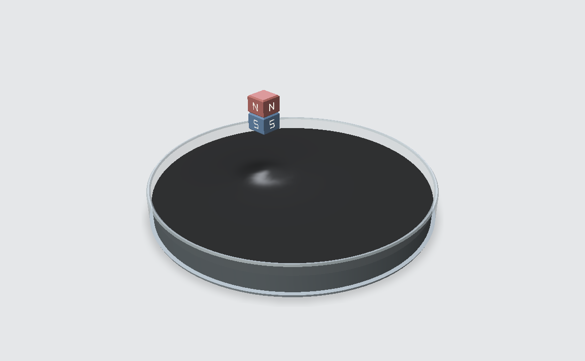

FerroPlay: Interactive Magnetic Fluid Simulation
CS 184 Final Project Milestone
Team Members: Cici Cai, Ian Meng Si, Stephanie Yao, William Xu
1. Introduction and Progress Summary
FerroPlay is an interactive simulation of a ferrofluid surface in a small container. Our goal is to let users move a virtual magnet and adjust its strength to explore how the surface deforms and develops characteristic spikes.
We built a C++ surface solver and an interactive Polyscope viewer for one magnet and one tray. The surface rises near the magnet, follows it as it moves, and relaxes when the field is switched off. A separate uniform-field experiment grows peaks from small surface perturbations. The latest iteration adds a transparent circular dish and lets a single magnet generate a local cluster of peaks.
2. Research Results
Cowley and Rosensweig showed in 1967 that a magnetic field perpendicular to a ferrofluid surface can make small ripples grow into a pattern of peaks. This finding inspired FerroPlay’s uniform-field experiment. Cowley and Rosensweig (1967)
We modeled the fluid by storing surface height h and vertical velocity v = ∂h/∂t on a regular grid. Height is measured from the flat resting surface, and t is simulation time. The surface acceleration htt measures how quickly its vertical velocity changes, calculated as:
htt = −ghh + ch∇²h − γht + Fm − ⟨Fm⟩
Each term contributes to the surface’s vertical acceleration. Gravity-like restoring (−ghh) pulls raised areas down and pushes depressions up, with strength set by gh. Surface tension (ch∇²h) smooths bumps and dips. ∇²h measures how a point’s height differs from its neighbors, and ch sets the smoothing strength. Drag (−γht) opposes vertical motion, with γ setting how quickly it dies out.
The important term is magnetic forcing. Fm represents the local upward acceleration estimated from the squared dipole field on the resting plane. The reason we did this was, if the whole surface rose with a fixed footprint, the model would effectively create extra liquid. Subtracting the area-weighted average ⟨Fm⟩ removes that overall lift. As the surface rises near the magnet, it dips elsewhere so the total liquid volume stays the same. Our solver sets the slope across each tray wall to zero and adjusts volume to be balanced every 1/240 of a simulated second.
To model the full liquid surface in the uniform-field experiment, we start with a flat height grid and add tiny, repeatable bumps and dips. The shape of the dish, its boundary, and the simulation mesh determine which standing ripples fit. The original square prototype used a cosine transform to separate those ripples.
To model which ripples grow under a magnetic field, we assign each ripple an effective stiffness K(q). The wavenumber q measures how closely spaced the ripple crests are. The stiffness K(q) tells us whether a ripple of that spacing tends to flatten or grow:
K(q) = gh + chq² − βq
The gravity-like term gh pushes all ripples back toward flat. Surface tension chq² pushes back hardest on closely spaced ripples. The magnetic term −βq reduces that pushback, with β setting its strength. A ripple grows when K(q) is negative, and peaks form where growing ripples reinforce one another. Model derivation
3. Preliminary Results and Core Simulation
The Polyscope viewer shows a glossy liquid surface in a transparent circular dish. Sliders let us move the virtual magnet and adjust its height and strength. A weak field barely lifts the surface. A stronger field creates a cluster of peaks near the magnet.
All three simulation tests shown below passed.
| Test | Observed result |
|---|---|
| Field strength | A weak field barely raised the liquid. At strength 0.92, six distinct peaks formed on the default mesh after 4.5 simulated seconds. |
| Magnet tracking | When we moved the magnet from left to right, the raised region followed it across the dish. |
| Field switch-off | After we turned the field off, the surface was nearly flat within three simulated seconds. |
We chose the mesh with 49 samples across the dish because it produced smoother peak outlines and stayed within the 60 FPS frame budget in our Windows tests. The exact peak pattern changed with mesh resolution.





4. Updated Schedule
Week 3 (November 23–29): Visuals and Simulation
- Refine spike shapes, surface smoothness, and reflections.
- Test performance at different resolutions and field strengths.
- If time allows, try multiple magnets, oscillating fields, and music-reactive effects.
Week 4 (November 30–December 6): Testing and Presentation
- Integrate the simulation, rendering, and interface.
- Fix bugs and improve performance.
- Compare results across settings.
- Finish the report and slides, and rehearse the presentation.
Milestone Links
- Milestone webpage
- Milestone video (URL pending)
- Milestone slides